So läuft es in der Gruppe

1 · Die Ansage für den nächsten Tag
Der Admin erzeugt den Text mit einem Klick im Werkzeug und fügt ihn in die Gruppe ein. Darin stehen Abfahrtszeit, Fahrzeuge mit Kennzeichen und Fahrer, freie Plätze, Treffpunkt, Ziel und ein Hinweis. Ganz unten der Link zum Einbuchen.
Die Crew muss nichts installieren und sich nirgends anmelden — ein Tipp auf den Link genügt.
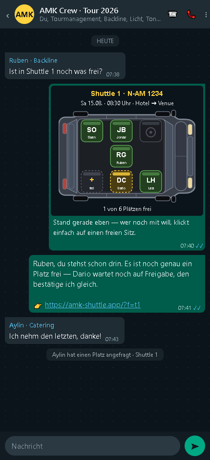
2 · Der Sitzplan als Bild
Wer nicht klicken mag, sieht trotzdem sofort Bescheid: Das Werkzeug macht aus jedem Sitzplan ein Bild zum Verschicken. Grün heißt bestätigt, gelb gestrichelt heißt angefragt, gestrichelt und leer heißt frei.
Das Bild lässt sich jederzeit neu erzeugen, wenn sich etwas geändert hat.
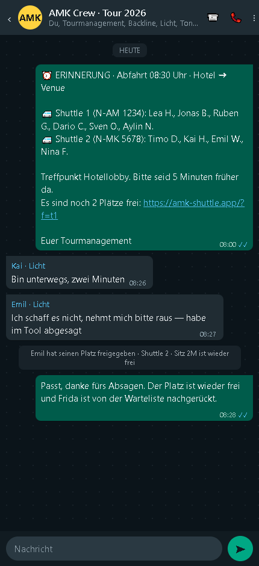
3 · Erinnerung kurz vor der Abfahrt
Ein zweiter fertiger Text zeigt, wer in welchem Fahrzeug sitzt. Sagt jemand ab, wird sein Platz sofort frei und die Warteliste rückt automatisch nach — das steht dann gleich in der nächsten Nachricht.
So sieht das Werkzeug für die Crew aus

4 · Auf einen freien Platz tippen
Nach dem Tippen auf den Link steht man direkt beim richtigen Fahrzeug. Ein Tipp auf einen freien Platz, kurz bestätigen, fertig. Welcher Sitz es genau wird, spielt keine Rolle — gezählt wird nur, wer mitfährt. Der Platz ist zuerst gelb (angefragt) und wird grün, sobald das Tourmanagement ihn freigegeben hat.
Der eigene Platz hat immer einen weißen Rand — man findet sich sofort wieder.
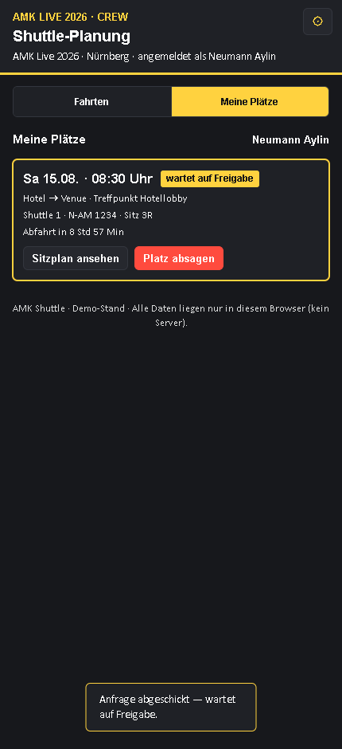
5 · Meine Plätze
Jeder sieht auf einen Blick alle eigenen Fahrten, das Fahrzeug, das Kennzeichen und wie lange es noch bis zur Abfahrt ist. Absagen geht mit einem Knopf — dann rutscht die Warteliste nach.
So sieht es für die Admins aus
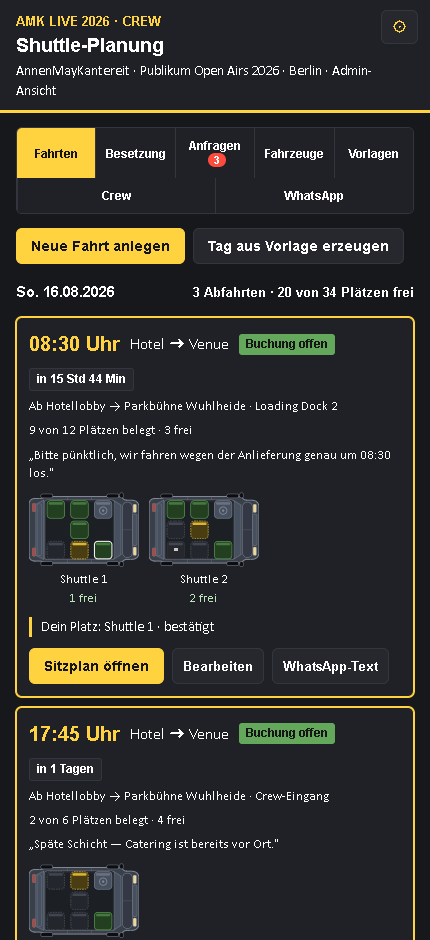
6 · Alle Abfahrten eines Tages
Jede Abfahrt mit Uhrzeit, Richtung, Treffpunkt und den kleinen Draufsichten der Fahrzeuge. Man sieht ohne Nachfragen, wie voll jedes Fahrzeug schon ist und wie lange es noch bis zur Abfahrt ist.

7 · Der Sitzplan in groß
Ein Klick auf einen Platz öffnet alles, was man damit machen kann: bestätigen, freigeben, jemanden direkt eintragen oder den Platz für Gepäck und Cases sperren. Gesperrte Plätze zählen nicht als frei.
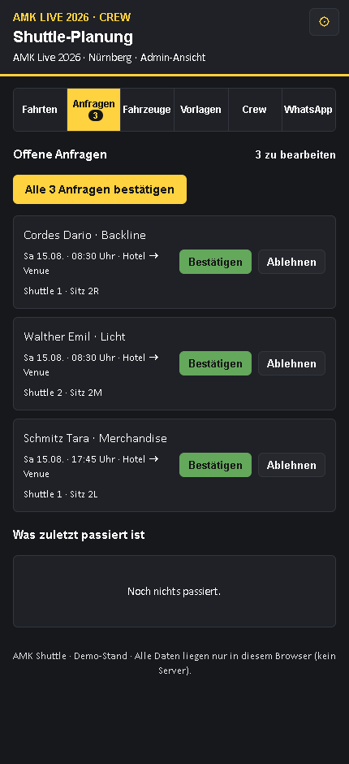
8 · Freigeben
Alle offenen Anfragen stehen in einer Liste, mit Name, Gewerk und Fahrzeug. Einzeln bestätigen oder alle auf einmal. Darunter steht, was zuletzt passiert ist — wer wann gebucht oder abgesagt hat.
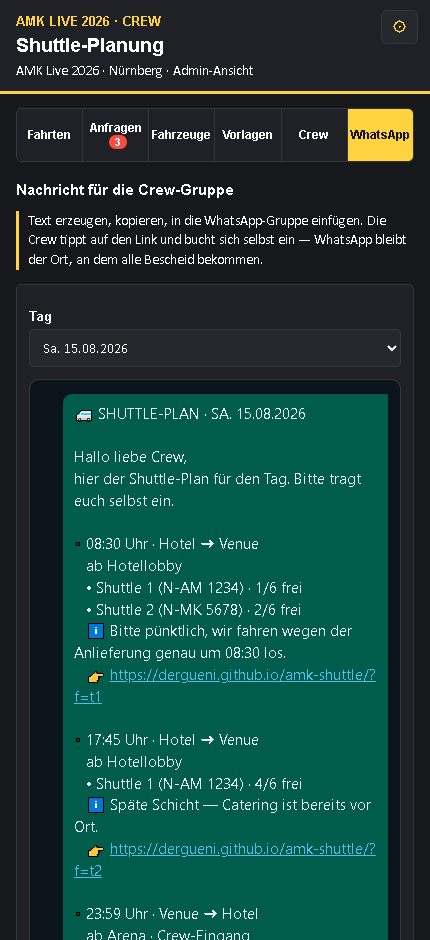
9 · Die Nachricht bauen
Drei fertige Bausteine: Ansage mit Link, Erinnerung vor der Abfahrt, oder der ganze Tag auf einmal. Man sieht die Nachricht genau so, wie sie später in der Gruppe steht. Dann „Text kopieren" oder „In WhatsApp öffnen" — dort wählt man die Crew-Gruppe aus.
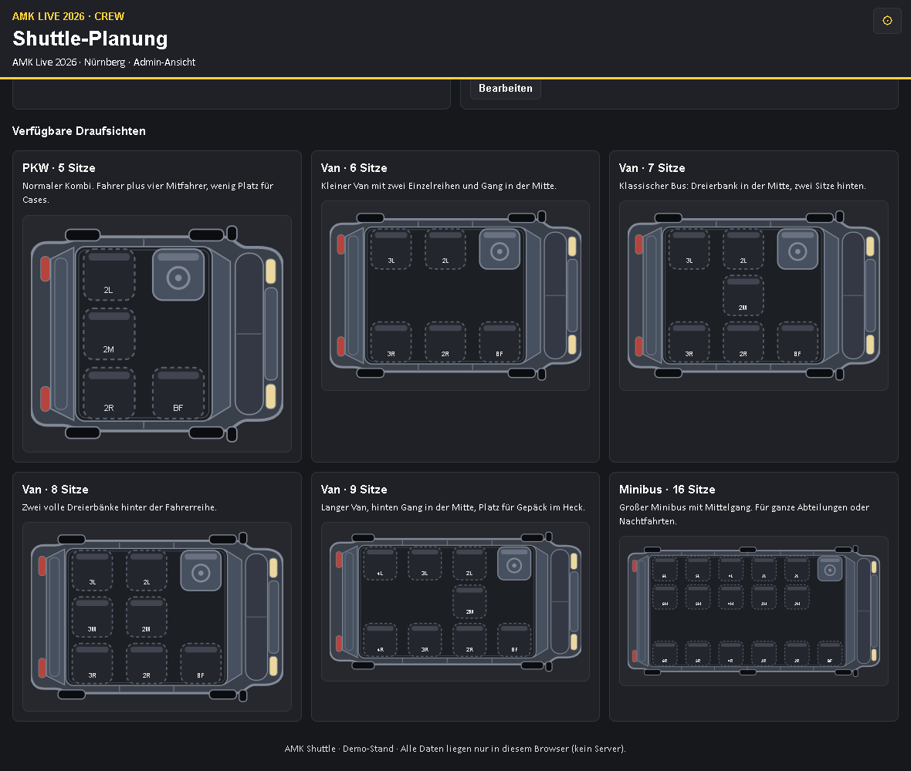
10 · Sechs Draufsichten zur Auswahl
PKW mit 5 Sitzen, Van mit 6, 7, 8 oder 9 Sitzen und ein Minibus mit 16 Sitzen. Beim Anlegen eines Fahrzeugs wählt man die passende Draufsicht und trägt Name, Kennzeichen, Fahrer und eine Notiz ein. Der Fahrerplatz ist immer belegt und nicht buchbar.
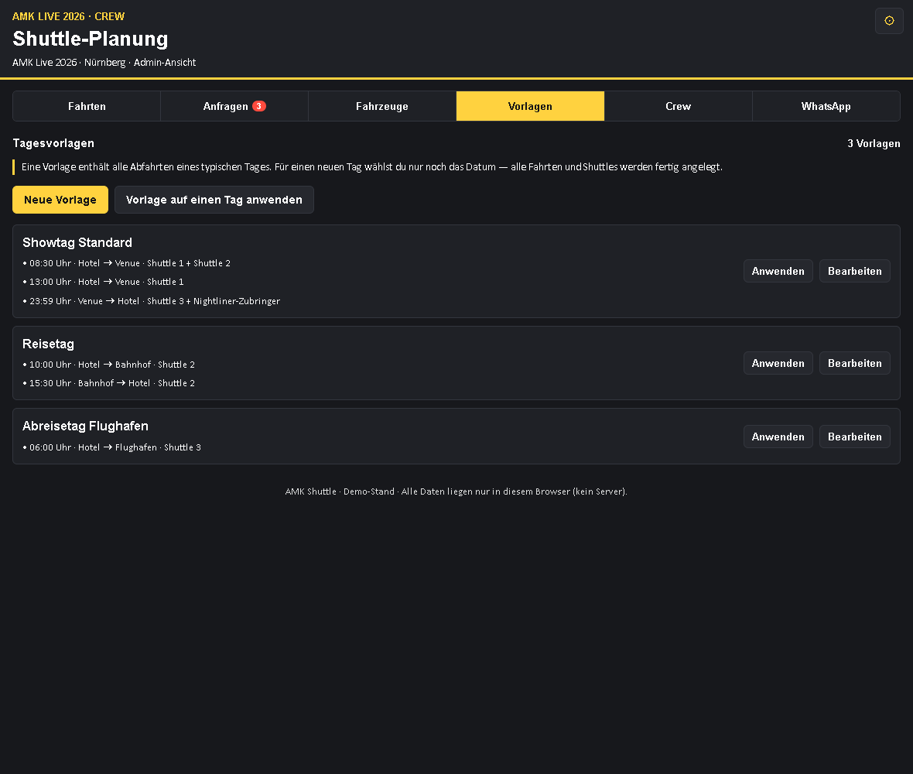
11 · Tagesvorlagen
Ein Showtag sieht meistens gleich aus. Die Vorlage merkt sich alle Abfahrten mit Zeiten, Richtungen, Treffpunkten und Fahrzeugen. Für einen neuen Tag wählt man nur noch das Datum — alles andere steht fertig da.
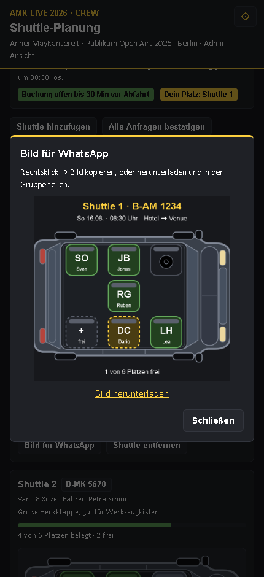
12 · Bild für die Gruppe erzeugen
Aus jedem Sitzplan wird auf Knopfdruck ein Bild mit Fahrzeugname, Kennzeichen, Datum, Uhrzeit und der Zahl der freien Plätze. Herunterladen und in die Gruppe schicken.
Planen: wer sitzt in welchem Shuttle

13 · Das Besetzungs-Fenster
Links die ganze Crew, nach Gewerken sortiert — Tourmanagement, Produktion, Band, Backline, Audio, Licht, LED, Rigging, Bühne, Catering, Merchandise, Fahrer. Rechts alle Abfahrten des Tages mit ihren Shuttles. Erst rechts auf einen freien Platz tippen, dann links doppelt auf den Namen — fertig. Am Handy genauso mit Doppeltippen.
Ein Doppeltipp auf einen belegten Platz nimmt die Person wieder heraus, „Rückgängig“ holt jeden Schritt zurück. Die rechte Maustaste (am Handy langes Drücken) öffnet zu jedem Namen und jedem Platz ein Menü: Info hinterlegen wie „fährt selbst“ oder „kommt später“, Gewerk ändern, aus der Fahrt oder aus dem ganzen Tag herausnehmen, Person bearbeiten oder löschen.
Neben jedem Namen steht sofort, in welcher Fahrt und welchem Fahrzeug die Person schon mitfährt. „Nur ohne Platz“ blendet alle aus, die schon versorgt sind. „Rest verteilen“ setzt alle Übriggebliebenen automatisch auf freie Plätze.
Zweite Gruppe: die Fahrer

14 · Fahrer sind in jeder Stadt andere
Deshalb hängen sie an der Stadt: Name, Telefonnummer, Mietwagenfirma, Notiz und das Fahrzeug, das sie fahren. Dazu je Stadt der Name der Fahrer-WhatsApp-Gruppe sowie Hotel und Venue. Beim Stadtwechsel stellt man oben um und hat die richtigen Leute vor sich.
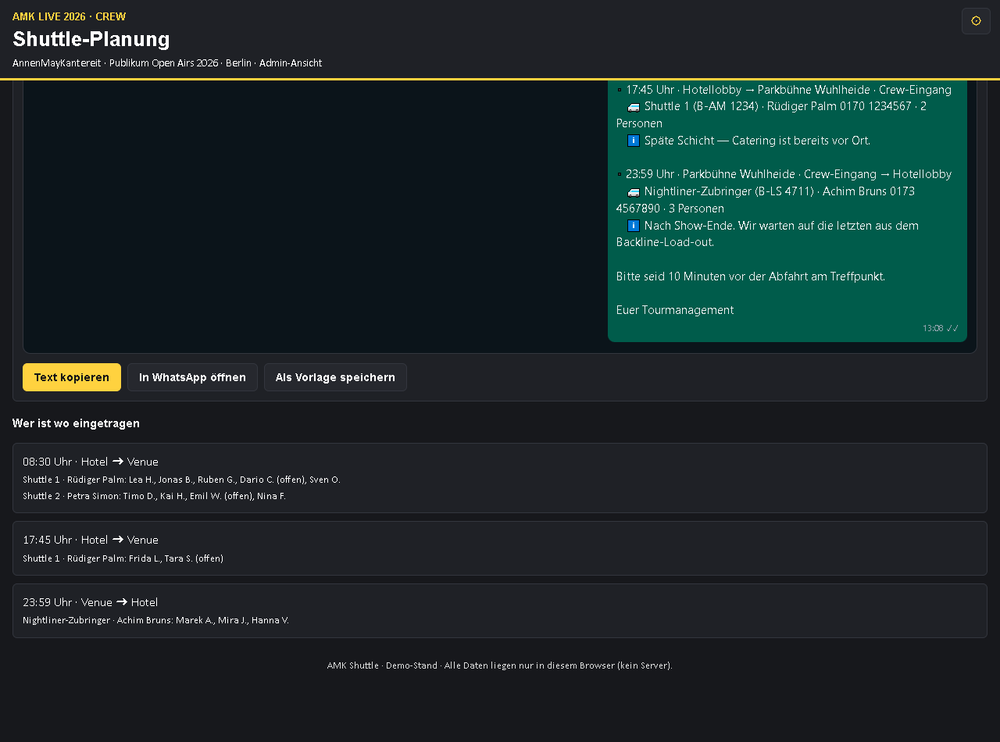
15 · Eigene Nachricht für die Fahrer
Die Fahrer bekommen einen anderen Text als die Crew: Fahrzeug, Kennzeichen, Fahrername mit Telefonnummer, Abfahrtszeit, Treffpunkt, Ziel und wie viele Personen mitfahren — aber keinen Buchungslink, denn buchen sollen sie nicht. Beide Gruppen werden aus derselben Planung bedient.
Textvorlagen und andere Künstler
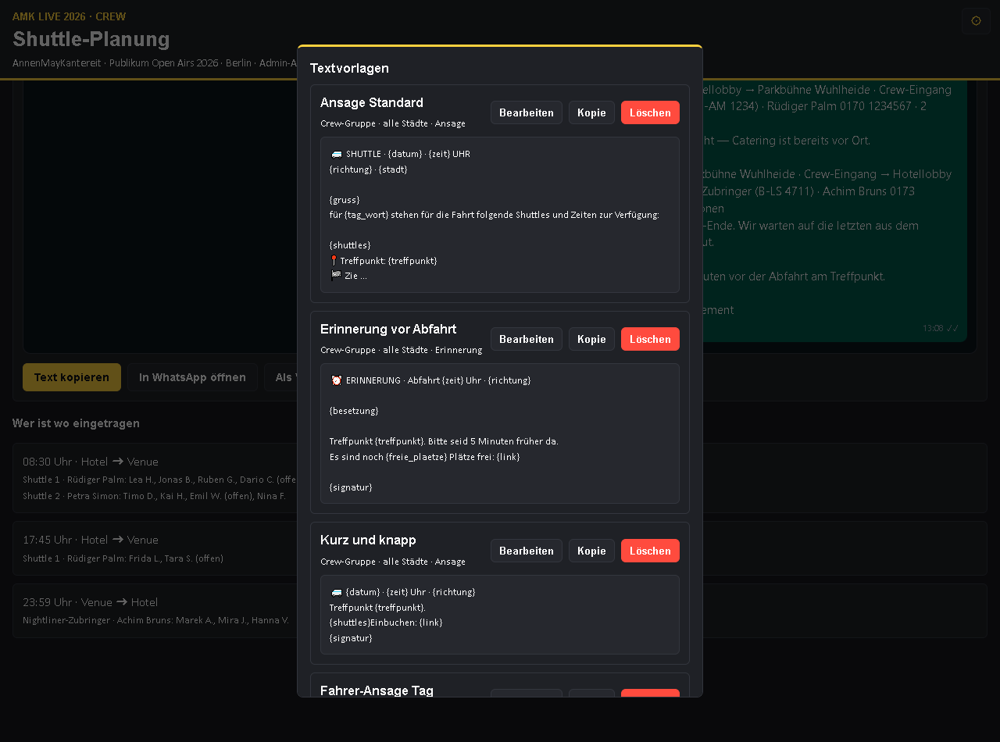
16 · Jeder Text ist frei bearbeitbar
Der fertige Text steht in einem Feld, in dem man einfach weiterschreiben kann. Darunter läuft die Vorschau mit, so wie es später in der Gruppe aussieht. Was gut ist, wird als Vorlage gespeichert — für alle Städte oder nur für eine, für die Crew-Gruppe oder für die Fahrer-Gruppe.
Beim Speichern werden Datum, Uhrzeit, Orte und Link automatisch durch Platzhalter ersetzt, damit die Vorlage am nächsten Tag wieder passt. Platzhalter setzt man auch selbst per Klick ein.

17 · Andere Künstler von Landstreicher
Grundlage ist die Tour von AnnenMayKantereit 2026. Umschalten geht jederzeit: jede Tour hat ihre eigenen Städte, ihre eigene Crew, ihre eigenen Fahrzeuge, Fahrer und Textvorlagen. Neue Touren legt man in zwei Feldern an. Die weiteren Namen in der Liste sind Beispiele aus dem Landstreicher-Roster — Termine trägt man ein oder holt sie später aus J.SHOW.

18 · Anbindung an J.SHOW — vorbereitet, aber aus
Adresse, Schlüssel, Kopfzeilen und die drei Pfade sind eingebaut, dazu Abrufen, Ansehen der Antwort im Klartext und Zurückschreiben. Ganz oben sitzt ein Schalter, der alles zurückhält: solange er aus ist, geht nichts nach außen und nichts herein. Er wird erst nach dem Go von Landstreicher umgelegt.

19 · Und so sieht es für die Crew in J.SHOW aus
Links der gewohnte Tagesablauf: zwischen Frühstück und Load-in steht der Shuttle mit der Zahl der freien Plätze. Ein Tipp darauf öffnet rechts die Fahrzeuge — „Platz nehmen“ genügt, der eigene Platz steht danach grün darunter.
Beide Bilder sind nachgestellt und zeigen, wie die Anbindung aussehen würde; sie sind keine Bildschirmfotos aus J.SHOW. Zum Durchklicken: Vorschau öffnen.
Was das Werkzeug außerdem kann
- Warteliste: Ist ein Fahrzeug voll, stellt man sich in die Warteliste. Wird ein Platz frei, rückt der Erste automatisch nach.
- Gepäckplätze: Einzelne Sitze lassen sich für Cases sperren — sie sehen anders aus und zählen nicht als frei.
- Buchungsschluss: Einstellbar, zum Beispiel 30 Minuten vor Abfahrt. Danach kann niemand mehr umbuchen.
- Countdown: Bei jeder Fahrt steht, wie lange es noch bis zur Abfahrt ist.
- Fahrerliste zum Ausdrucken: Eine Seite je Fahrzeug mit Sitz, Name und Abteilung — für den Fahrer oder fürs Production Office.
- QR-Code: Zum Aushängen an der Rezeption oder im Production Office, für alle, die den Link in der Gruppe nicht mehr finden.
- Crew-Liste einlesen: Namen aus einer bestehenden Liste einfügen statt einzeln tippen.
- Direkt eintragen: Wer nicht klicken will, ruft an — der Admin setzt ihn mit zwei Klicks selbst auf einen Sitz.
- Protokoll: Wer hat wann gebucht, abgesagt oder wurde bestätigt.
- Zwei Ansichten: Admin sieht alles, die Crew nur Fahrten und die eigenen Plätze.
- Hell und dunkel, Handy und Rechner: gleiche Optik wie das Gästelisten-Werkzeug.
- Sicherung: Der ganze Stand lässt sich als Datei speichern.
- Anbindung an J.SHOW vorbereitet: Verbindung einrichten, Tagesplan als JSON ausgeben, Travel Party als JSON einlesen — siehe die eigene Seite dazu.
WhatsApp lässt niemanden von außen automatisch in eine Gruppe schreiben — das geht bei keinem Werkzeug. Deshalb der Weg, der sicher funktioniert: Das Werkzeug baut die fertige Nachricht, der Admin fügt sie mit einem Klick in die Gruppe ein (oder verschickt das Sitzplan-Bild). Gebucht wird über den Link im Browser. So bleibt WhatsApp der Ort, an dem alle Bescheid bekommen, und der Sitzplan bleibt an einer Stelle sauber.
Landstreicher arbeitet bereits mit J.SHOW, dort stehen Termine, Städte und die Travel Party. Wir empfehlen, das Shuttle-Werkzeug nicht daneben, sondern daran zu bauen: Stammdaten von dort holen, den fertigen Sitzplan dorthin zurückgeben, Link im Tagesablauf. Die Begründung steht auf der Seite Anbindung an J.SHOW. Wichtig für die Vorführung: die Anbindung ist eingebaut, aber abgeschaltet — es geht nichts nach außen, solange die Freigabe von Landstreicher fehlt.
Dieser Stand ist eine Vorführung: Die Daten liegen im Browser des jeweiligen Geräts. Damit 60 Leute denselben Sitzplan sehen, braucht es einen kleinen gemeinsamen Speicher im Netz — das ist überschaubar und ändert an der Bedienung nichts. Sinnvoll wären dann außerdem: eine Anmeldung über den persönlichen Link, damit niemand für andere bucht, und eine automatische Erinnerung zur eingestellten Uhrzeit.